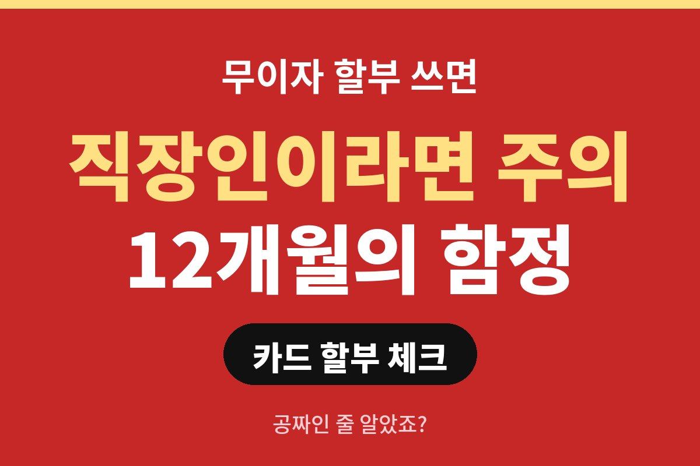
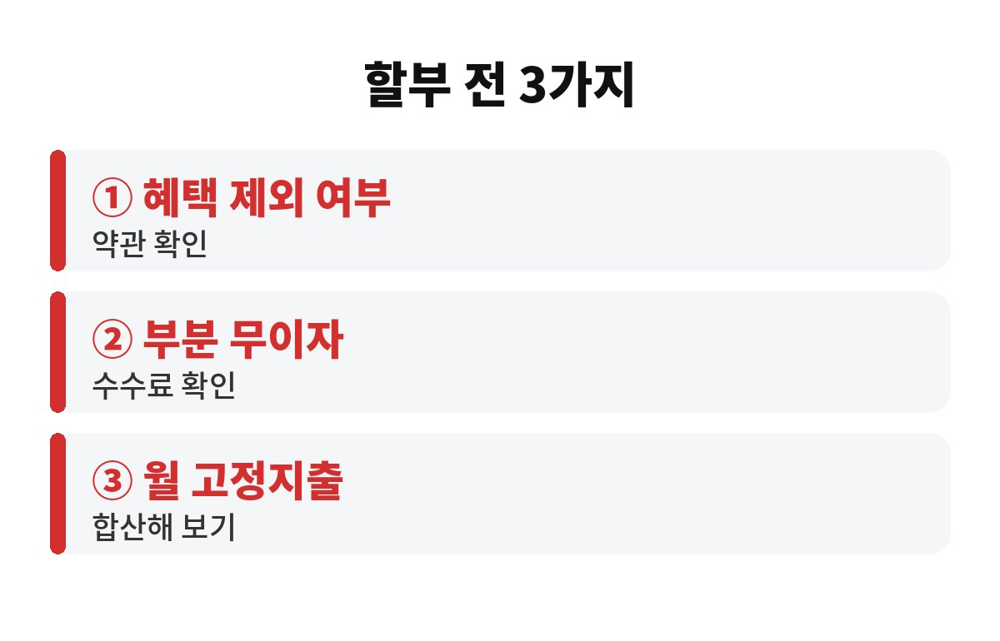
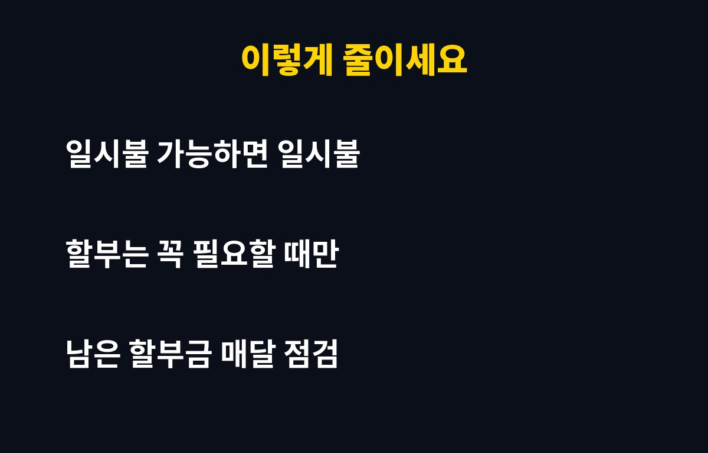

카드 무이자 할부 12개월은 이자는 없지만, 카드사 혜택이나 포인트 적립이 빠지는 경우가 있어서 완전히 공짜라고 보기는 어려워요. 월급에서 매달 할부금이 빠져나가는 직장인이라면, 내 카드가 어떤 조건인지 지금 확인해 보셨나요?
무이자 할부는 말 그대로 할부 수수료를 안 받는다는 뜻이에요. 예를 들어 120만원짜리 물건을 12개월 무이자로 사면 한 달에 10만원씩, 총 120만원만 내면 됩니다. 이 계산만 보면 손해가 없어 보이죠.
문제는 이자가 아니라 다른 데서 슬쩍 빠지는 혜택이에요. 카드사나 카드 상품에 따라 할부 결제는 포인트 적립, 캐시백, 청구 할인 대상에서 빠지는 경우가 있거든요. 일시불로 긁었으면 받았을 혜택을 못 받으면, 눈에 안 보이는 비용이 생기는 셈입니다. 이건 카드마다 다르니 내 카드 약관을 꼭 열어보세요.
가게에서 "무이자 됩니다" 하는 말만 믿고 긁었는데, 알고 보니 부분 무이자였던 경우가 의외로 많아요. 부분 무이자는 일부 회차에만 수수료를 내지 않거나, 소비자가 수수료를 일부 부담하는 방식이에요. 개월 수가 길수록 이 차이가 커질 수 있습니다.
결제할 때 영수증이나 승인 문자에 수수료가 적혀 있는지 보는 습관만 들여도 훨씬 안전해요. 모르고 지나가면 나중에 청구서에서 "어, 이게 왜 붙었지?" 하게 됩니다.
진짜 무서운 건 수수료보다 고정지출이 조용히 쌓인다는 점이에요. 한 건은 월 10만원이라 부담 없어 보여도, 노트북, 가전, 여행 경비를 각각 12개월로 끊으면 매달 빠지는 돈이 금방 불어납니다.
그러면 월급날이 되기도 전에 이미 쓸 수 있는 돈이 줄어 있어요. 갑자기 병원비나 경조사비가 생기면 마이너스통장이나 카드론 쪽으로 눈이 가기 쉽고요. 할부는 미래의 월급을 먼저 쓰는 거라는 걸 기억해 두면 좋겠습니다.

한 가지 더 짚자면, 할부로 산 물건을 중간에 환불하거나 교환할 때도 번거로울 수 있어요. 카드사에 따라 취소 처리 방식이 달라서 청구 금액이 한동안 어긋나 보이기도 합니다. 큰 금액을 할부로 긁었다면 취소 후 청구서가 제대로 정리됐는지 한 번은 꼭 확인해 보세요.
또 하나는 카드 한도예요. 할부 잔액은 남은 개월 수만큼 한도를 계속 차지하는 경우가 많습니다. 당장 쓸 수 있는 한도가 줄어들면 급할 때 결제가 막혀서 당황할 수 있어요. 그래서 큰 지출이 몰리는 시기에는 한도 여유를 미리 보는 습관이 도움이 됩니다.
| 점검 항목 | 확인할 곳 |
| 할부 시 혜택 제외 여부 | 카드 약관·앱 혜택 안내 |
| 부분 무이자 여부 | 승인 문자·영수증 |
| 매달 나가는 할부금 합계 | 카드 앱 결제 예정 금액 |
답은 의외로 단순해요. 첫째, 일시불로 낼 수 있는 금액이면 일시불이 혜택 면에서 유리한 경우가 많습니다. 둘째, 꼭 할부가 필요하면 완전 무이자인지부터 확인하세요. 셋째, 카드 앱에서 남은 할부금을 한 달에 한 번은 쭉 훑어보세요. 이 세 가지만 해도 새는 돈이 눈에 띄게 줄어요.

마지막으로 월급날 직후에 카드 앱을 열어 이번 달 결제 예정 금액을 적어 두는 걸 추천해요. 숫자를 눈으로 보면 "이번 달은 할부를 쉬어야겠다" 같은 판단이 훨씬 쉬워집니다. 작은 습관이지만 1년 쌓이면 가계부 모양이 달라져요. 오늘 퇴근길에 딱 5분만 투자해 보세요.
그리고 할부 개월 수를 정할 때는 "월 얼마까지 감당할 수 있나"를 먼저 정하고 거기에 맞추는 게 좋아요. 반대로 개월 수에 맞춰 사다 보면 지출이 점점 커지거든요.
참고로 포인트와 혜택은 작아 보여도 1년으로 모으면 꽤 쏠쏠해요. 커피 몇 잔 값이라고 가볍게 넘기기보다, 내 카드의 월 혜택 한도와 할부 제외 조건을 한 번 정리해 두면 어떤 결제를 일시불로 하고 어떤 결제를 할부로 할지 기준이 생깁니다. 기준이 있으면 계산대 앞에서 흔들릴 일도 줄어들고, 충동적으로 개월 수를 늘리는 일도 훨씬 적어져요. 결국 절약은 큰 결심보다 이런 작은 기준에서 시작합니다. 오늘 쓰는 카드부터 먼저 점검해 보세요.
여러분은 지금 무이자 할부를 몇 건 쓰고 계신가요? 댓글로 알려 주시고, 도움이 됐다면 구독도 눌러 주세요.
※ 본 글은 일반적인 정보 제공이며 투자 권유가 아닙니다. 카드 조건은 카드사·상품별로 다르니 약관을 확인하세요.